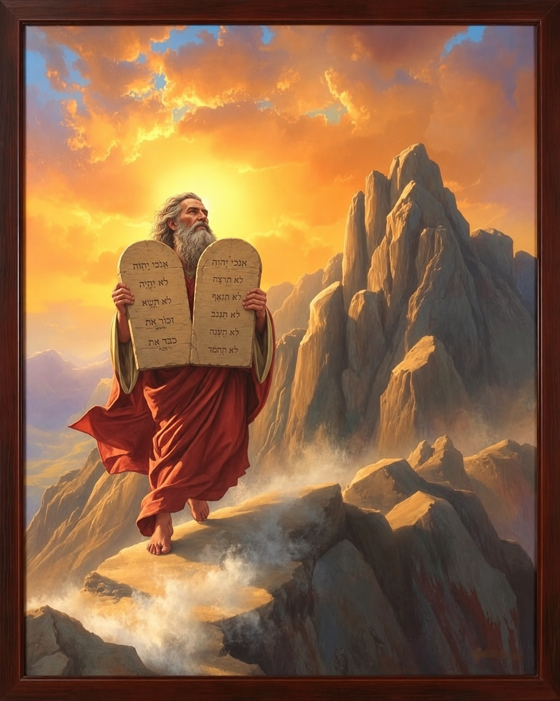

Adoração Exclusiva
"Não terás outros deuses diante de mim."
Coloca Deus em primeiro lugar — acima de hobbies, dinheiro, redes sociais ou ídolos modernos. Adorar exclusivamente é confiar somente n'Ele.
Êxodo 20:3Há mais de três mil anos, em meio a trovões, fumaça e fogo, o Deus do céu desceu sobre o monte Sinai e proferiu, com Sua própria voz, dez palavras que atravessaram os séculos. Não foram opiniões, sugestões ou costumes de uma cultura — foram a expressão eterna do Seu caráter, escritas em pedra pelo próprio dedo de Deus (Êxodo 31:18).
Para os adventistas do sétimo dia, a Lei dos Dez Mandamentos não é um peso, mas um espelho que revela o coração de Deus e a condição humana. Ela continua válida, imutável e gloriosa, porque reflete quem Deus é — e Deus não muda (Malaquias 3:6).
Este estudo te convida a redescobrir esse tesouro: memorizar, compreender e viver os Dez Mandamentos como resposta de amor àquele que primeiro nos amou.
A primeira tábua descreve nosso dever para com Deus. A segunda, nosso dever para com o próximo. Juntas, formam um só amor.
Cada mandamento é uma janela que se abre para o caráter de Deus e para a vida abundante que Ele deseja oferecer.
Coloca Deus em primeiro lugar — acima de hobbies, dinheiro, redes sociais ou ídolos modernos. Adorar exclusivamente é confiar somente n'Ele.
Êxodo 20:3Deus é Espírito e deve ser adorado em espírito e em verdade. Nenhuma estátua, ícone ou figura pode representar o Criador infinito.
Êxodo 20:4-6 · João 4:24Inclui usar o nome de Deus em palavrões, juramentos leviano ou viver como cristão sem refletir Seu caráter. O nome representa a essência divina.
Êxodo 20:7O único mandamento que começa com "Lembra-te". Memorial da criação (Gn 2:1-3), sinal eterno entre Deus e Seu povo, descanso e adoração do pôr do sol de sexta ao pôr do sol de sábado.
Êxodo 20:8-11 · Ezequiel 20:12Único mandamento com promessa. Honrar significa amar, respeitar, obedecer e cuidar dos pais ao longo de toda a vida.
Êxodo 20:12 · Efésios 6:1-3Mais que o ato físico, Jesus alargou: também o ódio, a ira e palavras que destroem ferem este mandamento (Mateus 5:21-22). A vida é sagrada porque vem de Deus.
Êxodo 20:13Protege o casamento, a pureza do corpo e da mente. Jesus ensina que até o olhar cobiçoso já é adultério no coração (Mateus 5:28).
Êxodo 20:14Inclui roubo, fraude, pirataria, sonegação, "cola" em provas e tomar o que pertence ao próximo — ou a Deus (dízimo, Ml 3:8).
Êxodo 20:15Defende a verdade: mentir, fofocar, caluniar, distorcer fatos ou espalhar boatos quebra esse mandamento. O Deus da verdade ama lábios verdadeiros.
Êxodo 20:16Atinge o coração: trata da inveja, do desejo desordenado e da insatisfação. Por isso Paulo disse que só pela Lei conheceu o pecado (Romanos 7:7).
Êxodo 20:17"Não penseis que vim destruir a Lei ou os Profetas; não vim destruir, mas cumprir. Em verdade vos digo que, até que o céu e a terra passem, nem um jota ou um til se omitirá da Lei."— Jesus Cristo
Longe de abolir, Cristo confirmou e ampliou a Lei, mostrando seu alcance espiritual. Ele a viveu perfeitamente em nosso lugar (Hb 4:15) e a gravou no coração dos que creem (Hb 8:10). A Lei moral dos Dez Mandamentos permanece o eterno padrão de justiça.
O que terminou na cruz foi a lei cerimonial — os sacrifícios e símbolos que apontavam para o Cordeiro (Cl 2:14-17). A Lei moral, escrita em pedra e guardada dentro da arca, continua intacta porque expressa o caráter imutável de Deus.

Não obedecemos para sermos salvos — somos salvos pela graça de Cristo (Ef 2:8-9). Obedecemos porque já fomos salvos, como filhos que respondem ao amor do Pai.
"Se me amais, guardareis os meus mandamentos."— João 14:15
A obediência é o termômetro do amor verdadeiro. Quem diz: "Eu o conheço", e não guarda os Seus mandamentos, é mentiroso (1 Jo 2:4). A fé genuína sempre produz frutos de obediência (Tg 2:17).
"Amarás o Senhor teu Deus de todo o teu coração, de toda a tua alma, de todas as tuas forças e de todo o teu entendimento."
"E amarás o teu próximo como a ti mesmo."
— LUCAS 10:27
Toda a Lei e os Profetas se resumem nestes dois mandamentos (Mt 22:40). O amor é o cumprimento da Lei (Rm 13:10).
"Pois qualquer que guardar toda a lei, e tropeçar em um só ponto, tornou-se culpado de todos. Porque aquele que disse: Não adulterarás, também disse: Não matarás. Ora, se não adulteras, mas matas, te hás tornado transgressor da lei."— Tiago 2:10-11
A Lei de Deus é como uma corrente de ouro com dez elos: basta romper um para que toda a corrente se quebre. Não existe pecado "pequeno" diante de um Deus santo. Escolher quais mandamentos obedecer é colocar-se no lugar de Deus — exatamente o engano que levou Lúcifer à queda.
Por isso o adventista guarda também o quarto mandamento — o sábado — mesmo que o mundo ao redor o ignore. Obedecer parcialmente é desobedecer inteiramente.
Aos que escolhem caminhar com Deus segundo Sua Lei, Ele promete um rio de bênçãos que se renova a cada dia.
"O teu mandamento me faz mais sábio do que os meus inimigos." (Sl 119:98)
"Tenho mais entendimento do que todos os meus mestres." (Sl 119:99)
"Muita paz têm os que amam a tua lei, e para eles não há tropeço." (Sl 119:165)
"Tudo quanto pedimos d'Ele recebemos, porque guardamos os Seus mandamentos." (1 Jo 3:22)
"Para que se prolonguem os teus dias." (Êx 20:12)
"Vós sois meus amigos, se fizerdes o que eu vos mando." (Jo 15:14)
Detalhes que tornam a Lei ainda mais preciosa para o estudante das Escrituras.
Os Dez Mandamentos foram a única parte da Bíblia escrita diretamente pelo dedo de Deus em duas tábuas de pedra (Êx 31:18; Dt 9:10).
As tábuas foram colocadas dentro da Arca da Aliança, abaixo do propiciatório, mostrando que misericórdia e justiça se encontram em Cristo (Êx 25:16-22).
João viu no céu o templo aberto e a arca da aliança (Ap 11:19) — a Lei continua válida no santuário celestial.
Apocalipse 12:17 e 14:12 descrevem o povo de Deus do fim do tempo: "os que guardam os mandamentos de Deus e têm o testemunho de Jesus".
O quarto mandamento contém o nome, o título e o domínio do Legislador — características de um selo oficial — sendo o sinal eterno da aliança (Êx 31:13-17).
Toda a Lei se resume em uma palavra: amor (Rm 13:10). E em duas tábuas: amor a Deus e amor ao próximo.
A Lei mostra o pecado, o Evangelho mostra o Salvador. As duas trabalham juntas: sem Lei não há consciência de pecado; sem o Evangelho não há perdão.
Decorar os mandamentos em ordem é uma forma de gravar no coração o caráter de Deus — exatamente o que Ele promete fazer na nova aliança (Hb 8:10).
"Aqui está a perseverança dos santos, os que guardam os mandamentos de Deus e a fé em Jesus."— Apocalipse 14:12
Que cada um, ao memorizar os Dez Mandamentos e compartilhar com um amigo as bênçãos da obediência, se torne uma luz no seu lar, na sua escola e no seu clube — vivendo, em palavra e em ação, o lema: "O amor de Cristo me motiva."